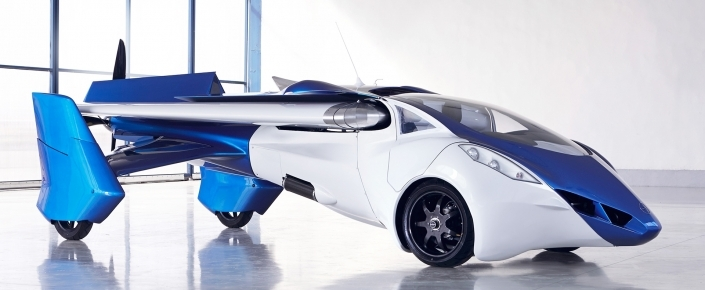
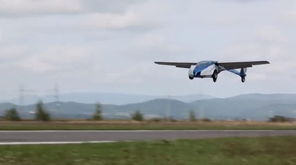

Uçabilen Araba
Ilk olarak hayatimizi Jetgiller ile giren ve Gelecege Dönüs filmiyle olaya farkli bir boyut kazandirilan uçan arabalarin gerçege dönüsme fikri, o dönemlerde pek önemsenmiyor olsa da günümüzde ayri bir sektör haline gelmeye hazirlaniyor.
AeroMobil'in kalkisa geçmesi için 250 metrelik bir alanda hizlanmasi gerekiyor. Inis yapabilmesi içinse 50 metrelik bir mesafeye ihtiyaci var. Rotax 912 motoru sayesinde karada 160 km hiza ulasabilen araba, havada 200 km hiza kadar çikabiliyor. Ayrica AeroMobil uçus esnasinda saatte 12.5 litre benzin tüketirken, karada 15 litre benzin tüketiyor.
 